Kalender und Aufgaben im Linear-Stil
Aufbau, Abstände, Schrift und Symbole nach Linear: Seitenleiste auf dunklem Grund, Inhalt als eingesetzte Fläche, Eigenschaften rechts. Jede App läuft als eigene Kachel im Tiling-Manager und baut sich je nach Größe um. Antippen öffnet ein Bild in voller Größe.
Ergebnis: alle Aufgaben der Überarbeitung erledigt
Stand nach der abschließenden Design-Prüfung (11.10.2026): Kalender, Aufgaben und Steuerzentrale sind eine Familie im Linear-Stil, hell und dunkel gleichwertig, in jeder Kachelgröße mit eigenem Layout. Offen ist Feinschliff (Titel mit „…“, Kleinstgrößen der Steuerzentrale, einheitliche Datumsform) – als Aufgaben D.1–D.11 geplant.


Stand in Iced: die echten Apps
Aufgaben und Kalender mit Beispieldaten (--demo), so wie sie jetzt laufen. Fertig: Fenster, Seitenleiste, Liste, Detail, Woche, Agenda, Editor. In Arbeit: Monat, Kopfleiste der Aufgaben, Einstellungsseiten; danach die Mini-Kachel und die Leiste.


Stand in Iced: Kalender als kleine Kachel
Für dauerhaft gekachelte Fenster: In Mini und Leiste zeigt der Kalender nur das Wichtigste, aus der Distanz lesbar. Die Leiste ist der heutige Tag als waagerechter Zeitstrahl (Idee von HEY, ruhiger umgesetzt). Schmal zeigt einen Tag mit Wochenleiste darüber.


Stand in Iced: das Linear-Fenster
Das gemeinsame Fenster (F.5) in der echten GUI, als Beispiel „Tasks“ mit Beispieldaten: Seitenleiste, eingesetzte Inhaltsfläche, Eigenschaften-Spalte, in Mittel das Menü „Today ▾“. Darauf bauen jetzt Aufgaben, Kalender und Steuerzentrale auf.


Stand in Iced: die Bausteine
So sehen die Stile jetzt in der echten GUI aus (Iced, Galerie aus F.3), jeweils normal, Hover, gedrückt und deaktiviert. Rot gibt es nur beim Primärknopf; Auswahl ist neutral. Der fremde Text im Hintergrund kommt von der Durchsichtigkeit unter Omarchy und verschwindet mit F.7. Das gemeinsame Linear-Fenster (F.5) ist in Arbeit, danach folgen die Apps.


Wie die Apps kleiner werden
Kalender
Seitenleiste mit Mini-Monat zum Navigieren (wie Notion Calendar), getönte Termine mit Farbbalken, unbestätigte gestrichelt, freie Zeit in Lücken, Aufgaben als Umriss und die Ablage „This week“ unten.
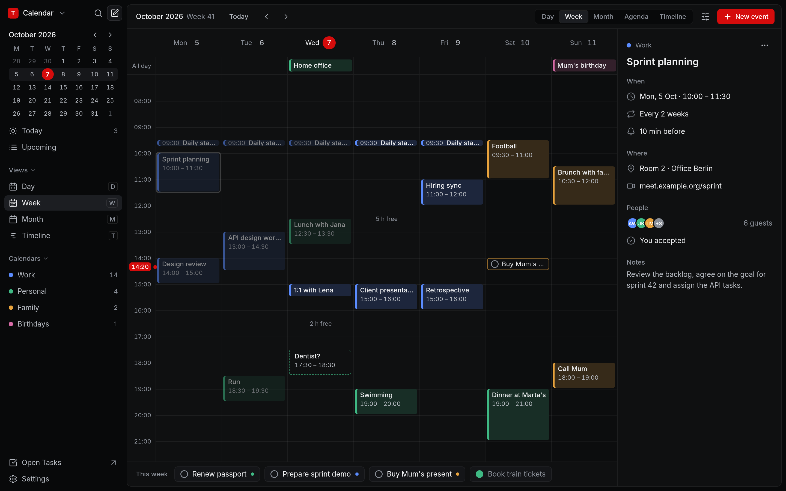
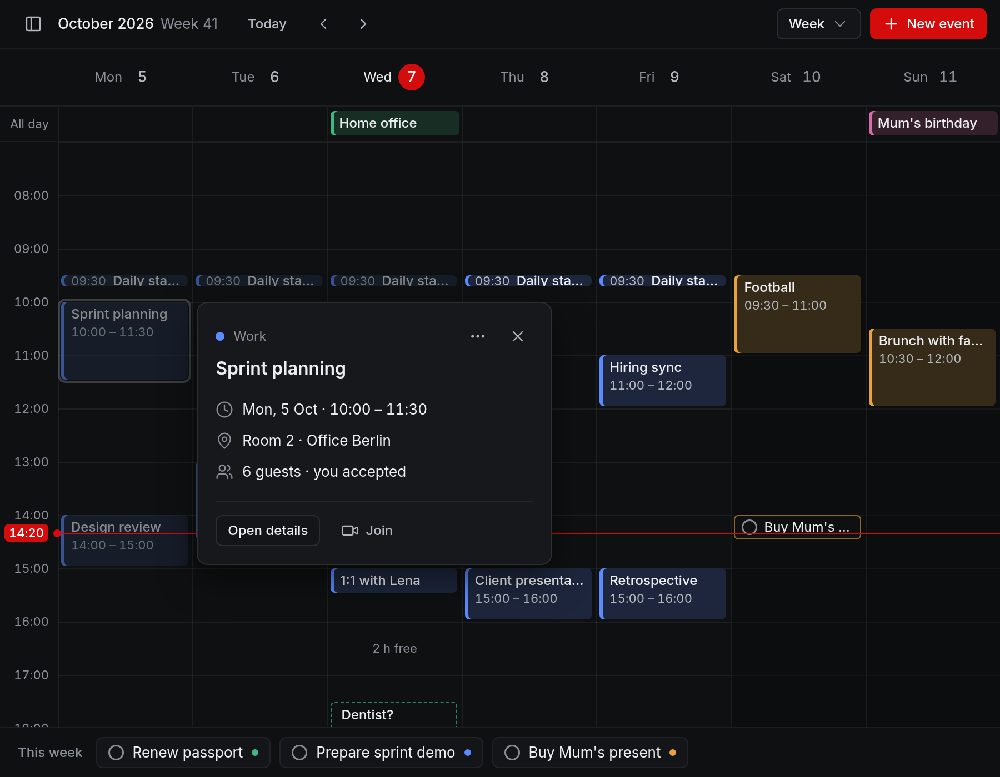
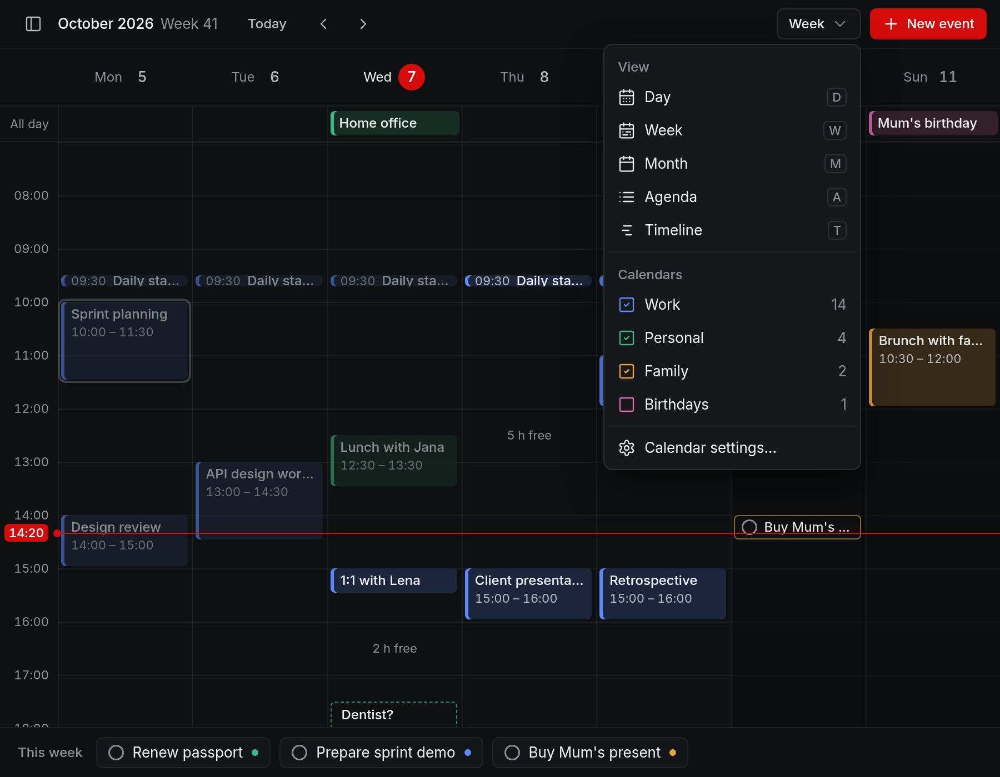
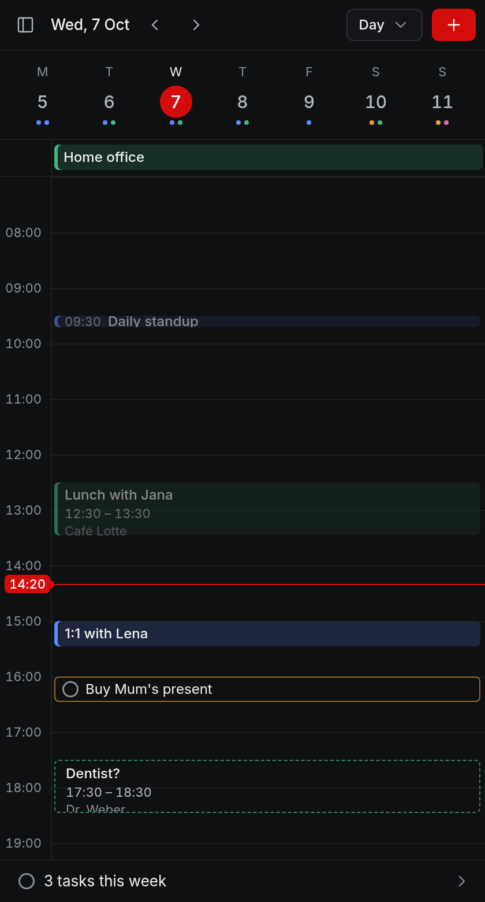
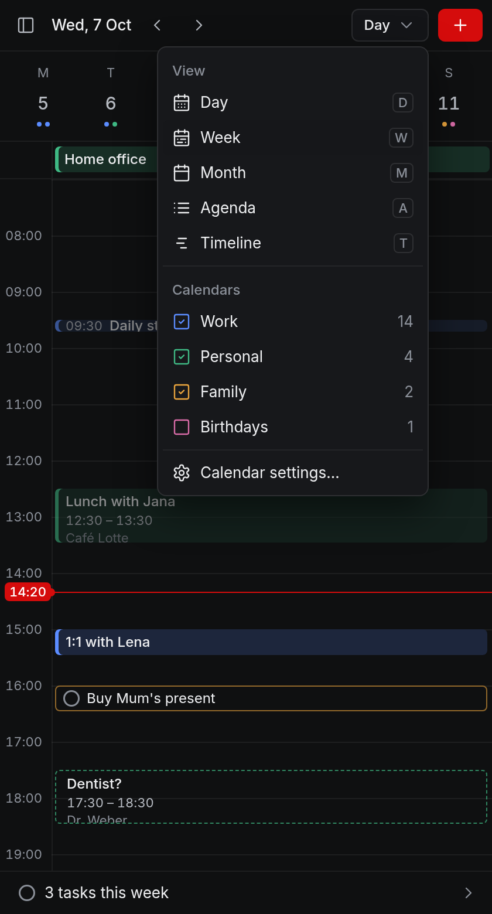
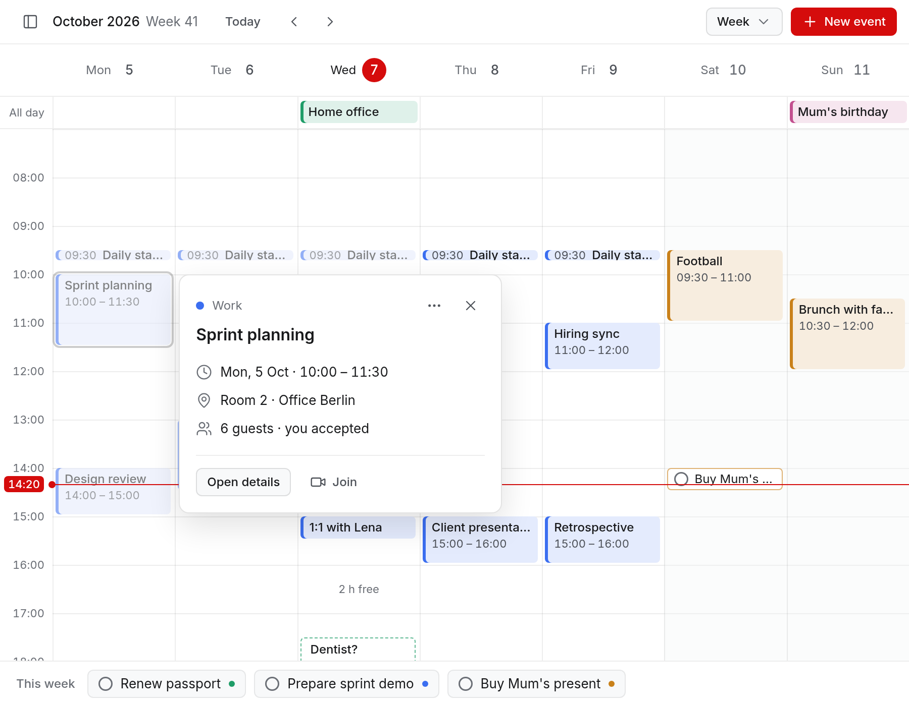
Aufgaben
Aufgebaut wie Linears Issue-Liste: Gruppen „Overdue · Today · Upcoming“, Prioritäts-Balken, Liste als Etikett, Fälligkeit rechts. Das Detail zeigt Unteraufgaben und wer was geändert hat, auch Agenten.
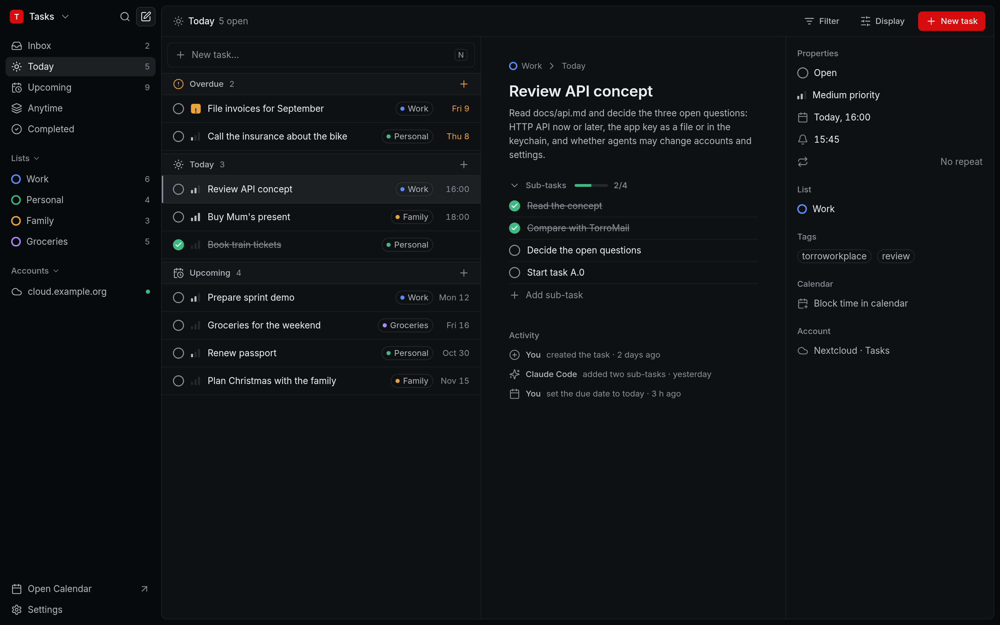
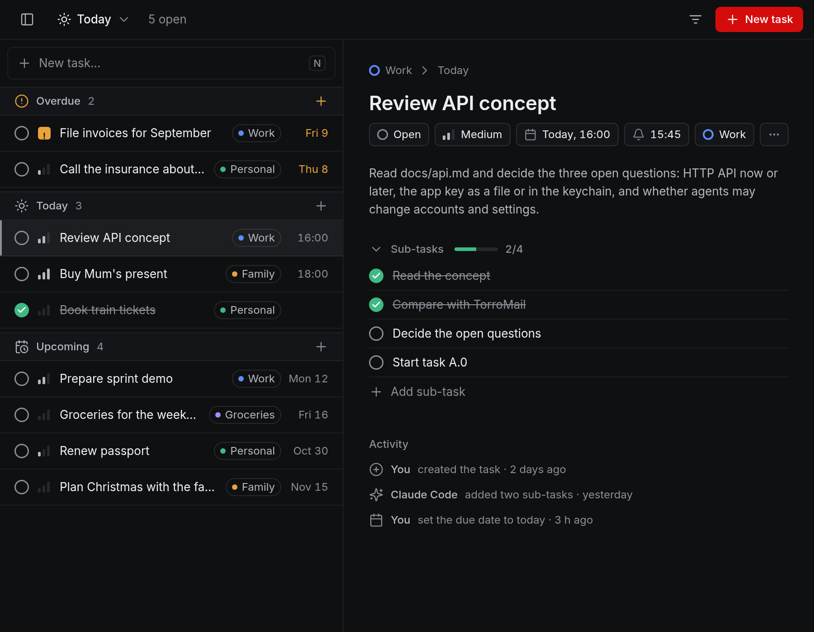
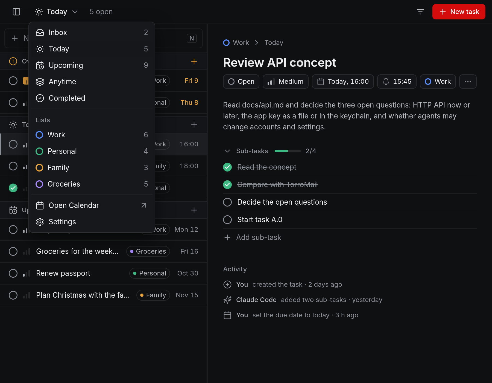
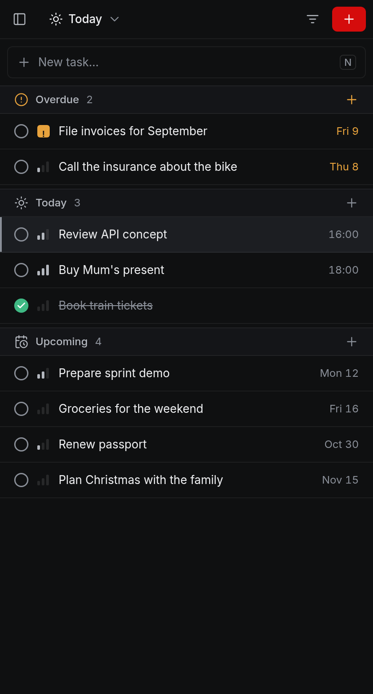
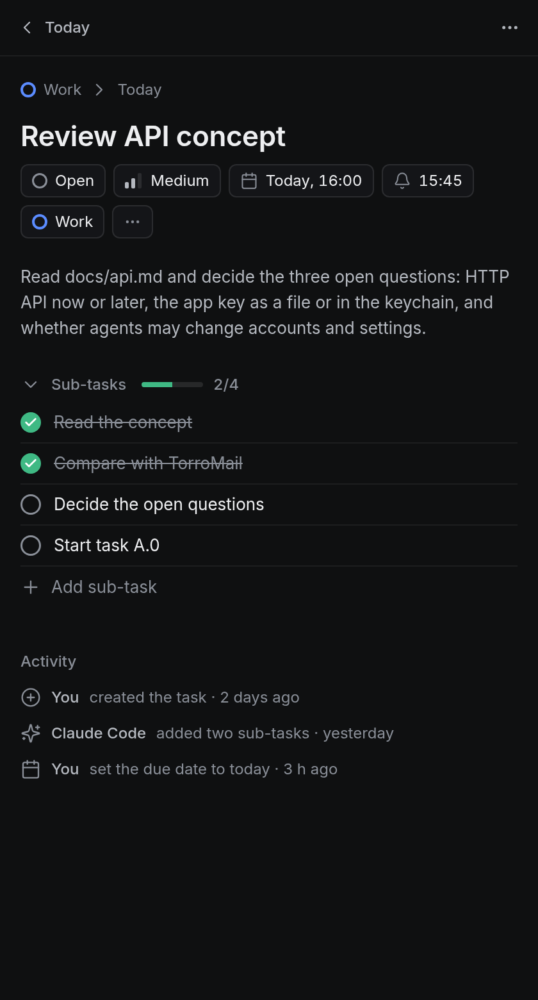
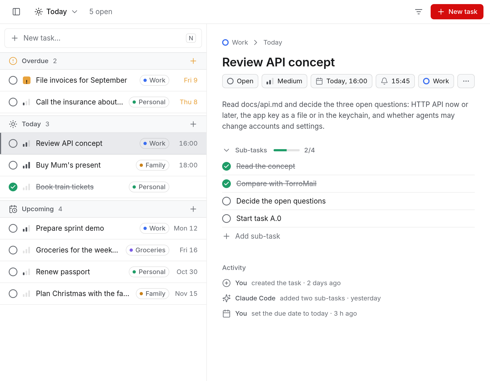
Noch zu entscheiden
- Grundgröße 13 (Linear) oder 14?Vorschlag: 13 wie Linear und eine Einstellung „Interface size“, mit der Iced alles skaliert.
- Eingesetzter Inhalt mit RandTypisch Linear; mit Hyprland-Rahmen eventuell doppelt. Erst echt gekachelt beurteilen, notfalls bündig.
- Mini und Leiste als Nächstes?Kachel mit nächstem Termin und „Free until …“, Leiste als waagerechter Tageszeitstrahl wie bei HEY.
- Steuerzentrale im selben StilSeitenleiste mit Abschnitten, Einstellungen als gruppierte Listen.